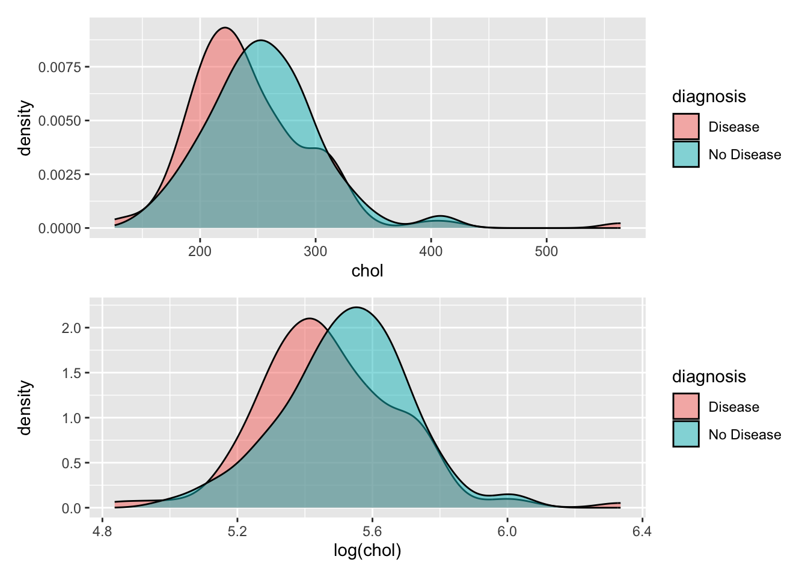

library(tidyverse)
library(tidymodels)
library(here)
library(patchwork)Recipes and Specifications
Setup
ha_1 <- read_csv(here("Data", "ha_1.csv"))
head(ha_1)# A tibble: 6 × 9
Name age sex cp trtbps chol restecg thalach diagnosis
<chr> <dbl> <dbl> <dbl> <dbl> <dbl> <dbl> <dbl> <chr>
1 Magnolia Cassin 60 1 1 117 230 1 160 No Disea…
2 Dr. Cathern Heathcote 60 0 3 102 318 1 160 Disease
3 Miles Wolf 62 0 3 130 263 1 97 No Disea…
4 Mikaila Block 43 1 1 115 303 1 181 Disease
5 Mrs. Jacquline Marqu… 66 1 1 120 302 0 151 Disease
6 Dr. Ottie Barton 44 1 3 140 235 0 180 Disease Data Cleaning
Good first things to check: missing data, and variable types.
ha_1 <- ha_1 %>%
mutate(
cp = factor(cp),
sex = factor(sex),
restecg = factor(restecg),
diagnosis = factor(diagnosis)
) %>%
drop_na()Model Types
Ask yourself: if you are given future data about a person, what would you do with that information to predict their disease status?
That is, what is your “strategy” for arriving at a prediction?
Logistic regression: “We’ll come up with a linear equation to predict the log-odds of heart disease”
\[b_1*\text{Joe's age} + b_2*\text{Joe's cholesterol} = \text{Joe's risk of disease}\]
K-Nearest-Neighbors: “We’ll find some people with similar symptoms, and predict the same outcome as them.”
Bob has similar age and cholesterol levels to Joe, and Bob does not have heart disease, so Joe probably doesn’t either.
Decision Trees: “We’ll come up with a series of yes or no questions that guides us to a prediction.”
Joe, do you have high cholesterol? Yes. Are you over 60? Yes. You are at risk for heart disease.
Specifications in tidymodels
First, we’ll make our specification for a logistic regression:
lr_spec <- logistic_reg()Take a look at this object:
lr_specLogistic Regression Model Specification (classification)
Computational engine: glm Two important pieces of information have been automatically chosen for you:
The mode is set to
classification. This means that we plan to predict categories (heart disease or not), rather than something numeric.The engine is set to
glm. This means that the actual computation for this model will use the functions from the pre-existingglmpackage.
These things can be set manually as well:
lr_spec <- logistic_reg() %>%
set_mode("classification") %>%
set_engine("glm")To find the name of the tidymodels function for a particular model, go to https://www.tidymodels.org/find/parsnip/
Exercises
- Find the tidymodels function for Decision Trees and use it to create a model specification object called
dt_spec.
dt_spec <- decision_tree() %>%
set_mode("classification")- If you do not use
set_mode(), what mode is chosen?
“Unknown” - it will not run!
- What function, from what package, is the default engine?
The
rpartfunction from therpartpackage.
- Find the tidymodels function for K-Nearest-Neighbors, and use it to create a model specification object called
knn_spec.
knn_spec <- nearest_neighbor() %>%
set_mode("classification")- A K-Nearest-Neighbors process needs to use a pre-chosen number of nearest neighbors to make predictions. How many neighbors does the specification use by default?
The default is 5
- Set the number of neighbors to 10 instead of the default value.
knn_spec <- nearest_neighbor(neighbors = 10) %>%
set_mode("classification")
Warning
For most models, there are a LOT of small choices that can impact the way the process behaves.
Check out the documentation for tidymodels::decision_tree(). What inputs could we have changed?
Check out the documentation for the engine, ?rpart::rpart.control. There are even more inputs that we could have changed!
Conclusion
You now have three objects in your environment: lr_spec, dt_spec, and knn_spec.
Importantly, none of these objects have anything to do with the heart risk data!!!
These objects cannot yet be used to make predictions. They simply establish the “rules” for three strategies we might try in our classification task.
Recipes:
Now that we have decided what prediction strategies we might try, we need to ask ourselves: What information does each model specification need from the data?
And, how do we alter the original data to prepare it for the prediction process?
These data decisions - what information will be used, and how it will be pre-processed - are contained in the recipe.
At its most simple, a recipe only needs to provide a response variable (what we want to predict) and any number of explanatory variables (information the modeling process will use).
Perhaps we might consider predicting heart disease diagnosis based only on a person’s age and cholesterol levels.
rec_1 <- recipe(diagnosis ~ age + chol,
data = ha_1)Take a look at this object:
rec_1── Recipe ──────────────────────────────────────────────────────────────────────── Inputs Number of variables by roleoutcome: 1
predictor: 2summary(rec_1)# A tibble: 3 × 4
variable type role source
<chr> <list> <chr> <chr>
1 age <chr [2]> predictor original
2 chol <chr [2]> predictor original
3 diagnosis <chr [3]> outcome originalNotice that the variables diagnosis, age, and chol have been given the roles of either predictor or outcome.
Math transformations
Perhaps we’ve also noticed that the chol variable is a clearer predictor when it is log-transformed.
p1 <- ha_1 %>%
ggplot(aes(x = chol, fill = diagnosis)) +
geom_density(alpha = 0.5)
p2 <- ha_1 %>%
ggplot(aes(x = log(chol), fill = diagnosis)) +
geom_density(alpha = 0.5)
p1/p2
Of course, we could simply alter our ha_1 data object and transform the chol column - but should we? This is not a data cleaning step, i.e., a problem with the data collection and recording. It is a data pre-processing step, something we are doing as part of the modeling workflow.
So instead of making a permanent change, we add it to our recipe:
rec_2 <- rec_1 %>%
step_log(chol)Omitting variables
Now, we probably want to use more variables than only age and chol to predict heart risk. A shortcut for modeling formulas is to use ~., which says “Include all the variables except the response variable.”
rec_3 <- recipe(diagnosis ~ .,
data = ha_1)summary(rec_3)# A tibble: 9 × 4
variable type role source
<chr> <list> <chr> <chr>
1 Name <chr [3]> predictor original
2 age <chr [2]> predictor original
3 sex <chr [3]> predictor original
4 cp <chr [3]> predictor original
5 trtbps <chr [2]> predictor original
6 chol <chr [2]> predictor original
7 restecg <chr [3]> predictor original
8 thalach <chr [2]> predictor original
9 diagnosis <chr [3]> outcome originalBut there is a problem ehre! We don’t want to use the person’s name - which is a label or ID variable - to predict their disease status.
rec_3 <- rec_3 %>%
update_role(Name,
new_role = "ID")summary(rec_3)# A tibble: 9 × 4
variable type role source
<chr> <list> <chr> <chr>
1 Name <chr [3]> ID original
2 age <chr [2]> predictor original
3 sex <chr [3]> predictor original
4 cp <chr [3]> predictor original
5 trtbps <chr [2]> predictor original
6 chol <chr [2]> predictor original
7 restecg <chr [3]> predictor original
8 thalach <chr [2]> predictor original
9 diagnosis <chr [3]> outcome originalDummy Variables
Another preparation we might need to do is to make sure the underlying computations treat categorical variables properly
For example, the variable cp is recorded as numbers 1 to 4, but from the data documentation we see:
cp: chest pain type – Value 1: typical angina – Value 2: atypical angina – Value 3: non-anginal pain – Value 4: asymptomatic
In our data cleaning step, we used `factor1 to make this variable categorical.
Unfortunately, not all modeling specifications know how to deal with categorical variables! Instead, we need to dummify the variable, to make it appear as numeric:
rec_3 <- rec_3 %>%
step_dummy(cp)To better conceptualize what happened in that step, we can make use of this recipe to bake() some data and see what it would look like:
rec_3 %>%
prep(ha_1) %>%
bake(ha_1)# A tibble: 204 × 11
Name age sex trtbps chol restecg thalach diagnosis cp_X2 cp_X3 cp_X4
<fct> <dbl> <fct> <dbl> <dbl> <fct> <dbl> <fct> <dbl> <dbl> <dbl>
1 Magnoli… 60 1 117 230 1 160 No Disea… 0 0 0
2 Dr. Cat… 60 0 102 318 1 160 Disease 0 1 0
3 Miles W… 62 0 130 263 1 97 No Disea… 0 1 0
4 Mikaila… 43 1 115 303 1 181 Disease 0 0 0
5 Mrs. Ja… 66 1 120 302 0 151 Disease 0 0 0
6 Dr. Ott… 44 1 140 235 0 180 Disease 0 1 0
7 Zina Ha… 63 0 150 407 0 154 No Disea… 0 0 0
8 Avery K… 64 0 180 325 1 154 Disease 0 0 0
9 Miss My… 51 1 140 299 1 173 No Disea… 0 0 0
10 Amina C… 41 1 110 172 0 158 No Disea… 0 0 0
# ℹ 194 more rows
Note
There are an enormous number of step_* functions built into tidymodels, which you can search through here: https://www.tidymodels.org/find/recipes/
It is also possible, although somewhat more complex, to use custom preprocessing functions in a recipe step
Deciding how to preprocess data is nontrivial, and requires practice!
Which recipes to try?
Here, you have seen three extremely common steps in recipes:
Mathematical transformations, like log-scaling or standardizing a column.
Variable omissions, especially for label variables.
Pre-processing of categorical variables to become numeric.
As you can imagine, there are infinitely more possible steps in a recipe, and infinite combinations of steps you could combine together.
The good news is, you don’t have to pick just one! We will use the shortcuts and automations of tidymodels to try multiple recipes and model specifications and see what predicts best.
However, you still have to narrow it down to a reasonable number, and deciding which recipes are worth trying is tough. It requires a lot of exploration of the data (which we’re skipping in this workshop, but you should not skip in real life!) and a lot of instinct about the data and the models.
In other words, it takes practice!
Exercises
- There are two other variables that are categorical and need to be dummified. Update the
rec_3object to properly process these variables.
rec_3 <- rec_3 %>%
step_dummy(sex) %>%
step_dummy(restecg)- Find another
step_*function that might be reasonable for this data. Make a new object,rec_4, that includes this step.
rec_4 <- rec_3 %>%
step_normalize(trtbps)(Hint: If you are feeling lost, use step_rm() to omit any one of the predictors.)